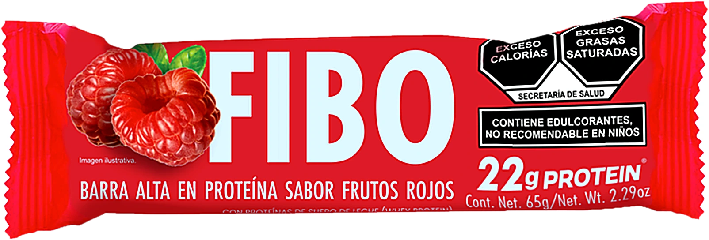
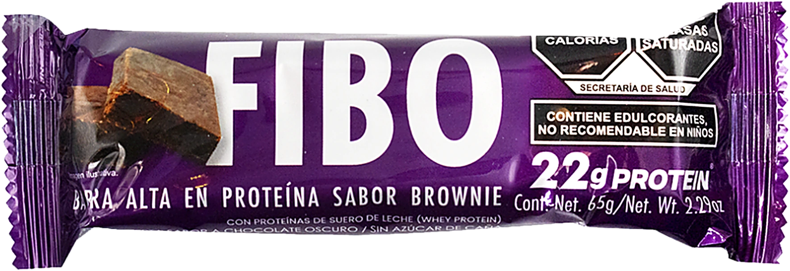

Ocho referencias que nos gustan, rehechas con FIBO, sus 4 sabores, Anton + Archivo y la paleta rojo · negro · hueso · lima · rosa · azul. Cada tarjeta trae su formato y un copy de ejemplo. Son bocetos animados para decidir dirección, no piezas finales.
Con FIBO te encuentras
Una serie que muestra cómo te vas encontrando: primero en cuadritos, luego entero.
NIVEL 01
[01] encuentro: apenas visiblefibo.mx
Te vas encontrando
Carrusel · post 4:5
Ref. Reading human presence. Foto de la ciudad en pixeles de 3 colores que se van afinando: 3 slides del carrusel.
CopyPrimero no te ves. Luego te encuentras. 🟩 #ConFIBOteEncuentras

Pendientes sí. Hambre no.
Copiadora · piso 3
La impresora de la ofi
Reel 9:16 · 7 s
Ref. Betty. Escena inesperada: la copiadora de la oficina imprime barras FIBO en lugar de reportes.
CopyMandé a imprimir el reporte. Salió algo mejor. 🖨️
Brownie65 G
Sabor: BrownieProteína: 22 g · Fibra: 10 gOrigen: Zapopan, JaliscoNotas: cacao · antojo · sí te llena
FIBO
Ficha de sabor
Post 4:5 · serie de 4
Ref. Rebel Bunny. Empaque lima sobre negro, con la ficha técnica en una etiqueta negra y FIBO enorme abajo.
CopyFicha técnica de tu nuevo antojo. Desliza para ver los 4. ➡️
Subelabarra22 G

Sube la barra
Post 4:5 · animado
Ref. Hyper · Set the bar high. Palabras en bloques de color que saltan una a una, con barras cayendo del lado blanco.
Copy22 g de proteína. Más del doble que una de 10. Sube la barra.
22 g proteína
sabor brownie
FIBO
10 g fibra
hecha en Jalisco
Lo de adentro también cuenta.
Se desenvuelve
Reel 9:16 · 5 s loop
Ref. Perfect Bar. La envoltura se abre en tiras con los datos, sobre un fondo de color del sabor.
CopyAbre. Muerde. Repite. Brownie con 22 g de proteína.
Modos FIBO
Post 4:5 · carrusel
Ref. PL!X. Cada sabor tiene un ícono en pixel y un «modo» del día, como si fueran etiquetas de lata.
Copy¿En qué modo andas hoy? Modo clase, modo ofi, modo antojo o modo domingo.
Kit FIBOPara los días que no paran4 sabores
El kit que gira
Reel 9:16 · 6 s loop
Ref. Essential kit. Bolsa transparente con los 4 sabores girando en negro. Ideal para lanzar el pack.
CopyTodo lo que necesitas para la semana, en una bolsa. Pídelo en fibo.mx.